K LEAGUE 1
2026 시즌 참가 구단
[ 펼치기 · 접기 ]
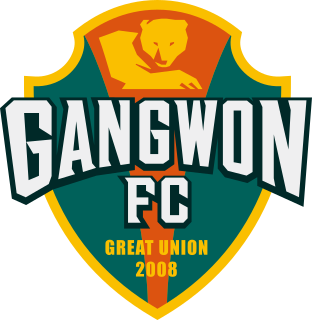
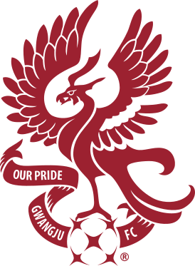
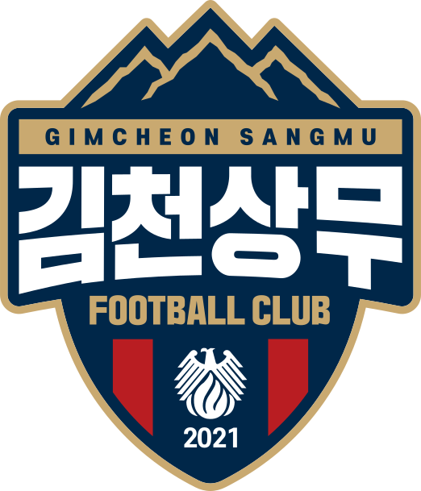
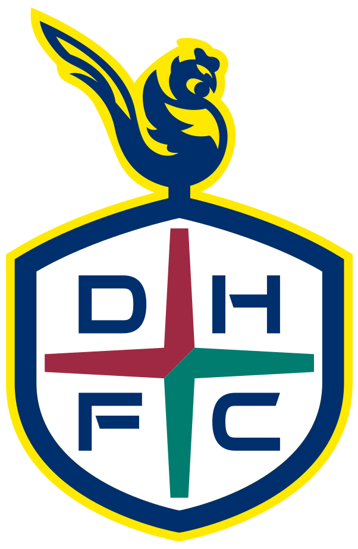
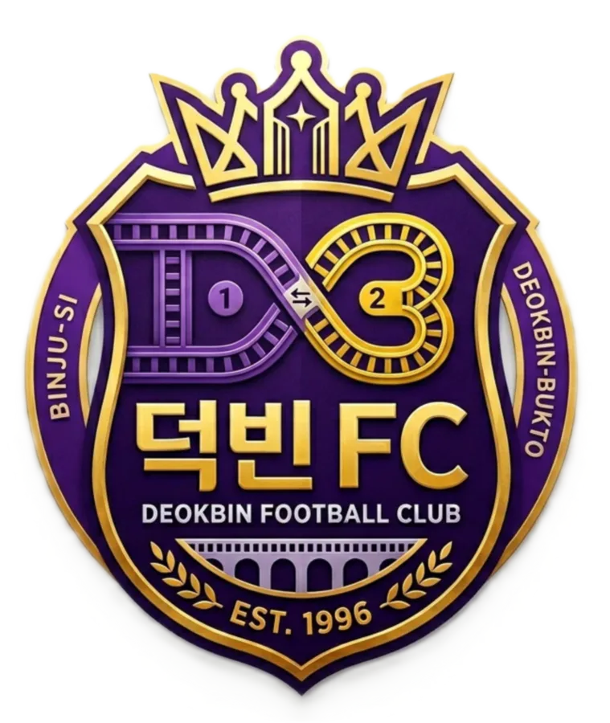
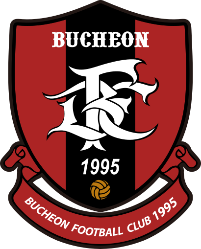
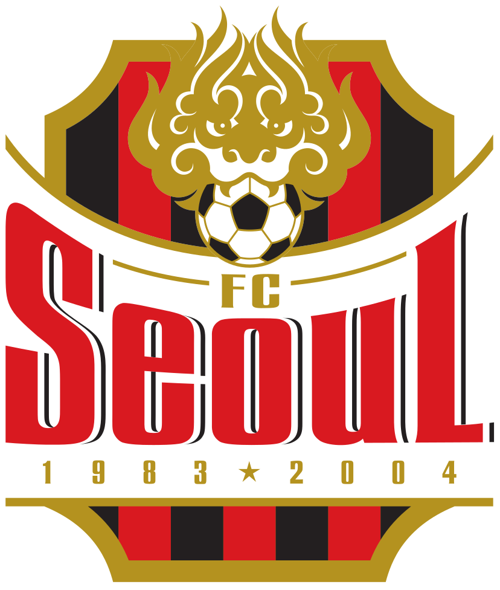
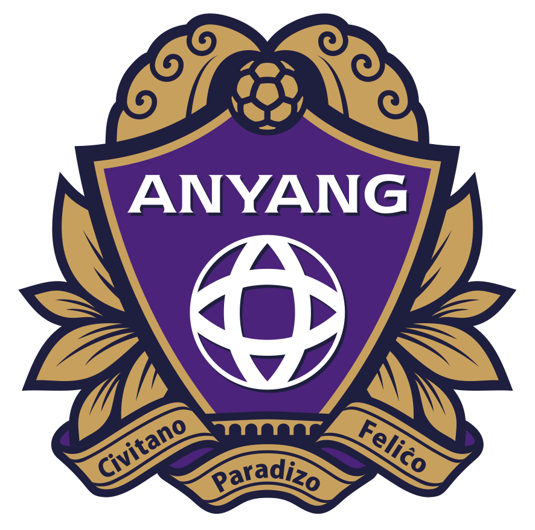
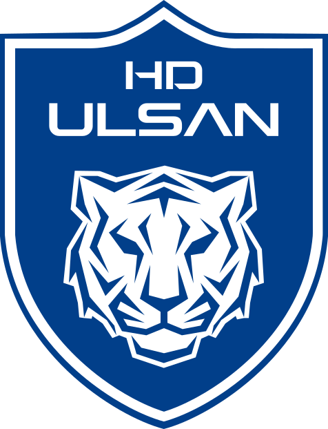
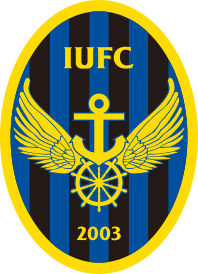

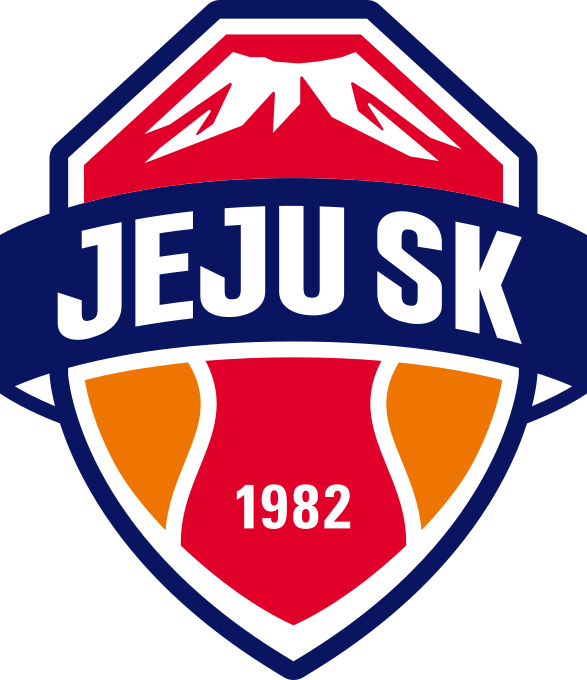
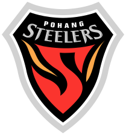
- 1. 구단 기본 정보
- 2. 개요
- 3. 팀명 유래 및 상징
- 4. 지배 구조 및 경영
- 5. 홈구장
- 6. 앰버서더 및 마케팅: 생존형 K-직장인과 맑눈광의 조화
- 7. 서포터즈 및 팬덤
- 8. 라이벌리: 철도 더비 (Railway Derby)
- 9. 여담
1. 구단 기본 정보
우측 상단의 인포박스 참조.
2. 개요
K리그1 소속의 프로 축구단. 덕빈북도 빈주시를 연고지로 삼고 있으며, 구단주는 빈주 시민들의 발이자 기적의 흑자 공기업인 빈주도시철도공사(BURC)이다.
옆 동네 효빈교통공사의 '효빈 레인보우 아쿠아드'가 막대한 자금력과 스쿼드로 리그를 폭격한다면, 덕빈 FC는 짠돌이 경영으로 유명한 김철수 사장의 지휘 아래 낭비 없는 '가성비 실리 축구'와 끈적한 수비 조직력으로 K리그1 최상위권을 다투는 신흥 강호다. 구단 인수 후 모기업의 서브컬처 마케팅 DNA가 축구단에도 이식되며 K리그에서 가장 특이하고 요망한 팬덤 문화를 자랑하는 팀으로 변모했다.
3. 팀명 유래 및 상징
원래 창단 초기에는 시민구단이었으나, 빈주도시철도공사가 전격 인수하며 모기업의 노선 색상을 팀 컬러로 채택했다.
이 두 가지 색상이 교차하는 유니폼은 K리그 내에서도 독보적인 세련됨을 자랑한다. 물론 팬들은 이 배색을 보고 "이거 완전 하나마루(1호선)랑 노조미(2호선) 듀오 아니냐"며 러브라이브 헌정 유니폼이라고 부른다(...). 3호선(연두색)이 개통되면 서드 유니폼은 무조건 흰 쌀밥 색깔이 섞일 것이라는 게 학계의 정설.
4. 지배 구조 및 경영
구단주 기업은 빈주도시철도공사(BURC)이다. 김철수 사장은 평소 직원들 야근 수당이나 부서 회식비에는 피도 눈물도 없는 짠돌이로 악명 높지만, 이상하게도 축구단과 마스코트 굿즈 사업에는 예산 결재를 시원하게 내주는 이중적인 행보를 보인다.
효빈교통공사가 "무지개빛 공격"으로 화려한 스쿼드를 꾸릴 때, 김철수 사장은 철저한 데이터 분석과 심리전을 바탕으로 저평가된 알짜배기 선수들을 영입해 리그 판도를 뒤흔든다. 영업이익 흑자 공기업답게 씀씀이는 적어도 구단 재정은 K리그에서 가장 탄탄하다.
5. 홈구장
홈구장인 빈주 천조 아레나(Binju Cheonjo Arena)는 덕북도청이 위치한 천조신도시에 자리 잡고 있다. 빈주 3호선 트램트레인이 구장 바로 앞까지 연결될 예정이라 교통 접근성은 타의 추종을 불허한다.
효빈 월드컵 경기장이 화려한 축제 분위기라면, 빈주 아레나는 실리적이고 빡빡한 원정길로 악명이 높다. 굿즈샵에는 축구용품 옆에 1호선 박빛나 주임과 2호선 김소빈 주임의 등신대와 철도 굿즈가 빼곡히 쌓여 있어 원정 팬들의 혼을 쏙 빼놓는다.
6. 앰버서더 및 마케팅: 생존형 K-직장인과 맑눈광의 조화
덕빈 FC의 알파이자 오메가. 빈주도시철도의 공식 마스코트인 박빛나와 김소빈이 구단의 메인 앰버서더로 맹활약 중이다.
- 1호선 박빛나: 구단의 온갖 잡일과 장외 홍보를 독박(?) 쓰는 생존형 앰버서더. 시축 행사에 불려 나올 때마다 눈 밑에 짙은 다크서클을 달고 "제발 오늘은 일찍 끝나게 해주세요"라고 읊조리며 공을 찬다. 홈팀이 지고 있으면 관중석에서 휴대용 결제 단말기를 꽉 쥐고 섀도우 복싱을 하는 모습이 포착된다(...).
- 2호선 김소빈: 2026년 합류한 신입 앰버서더이자 합법적 진상 퇴치기. 하프타임 이벤트 때 마이크를 잡고 원정팀 서포터즈석을 향해 "어머! 원정 팬 여러분~ 지금 던지신 물병은 경기장 안전수칙 위반으로 과태료 대상이십니다~ 경찰 부를까요? 헤헤^^"라며 해맑게 팩폭을 날려 상대의 멘탈을 붕괴시킨다.
특히 심리학 전공인 김소빈이 전광판 영상으로 상대 팀 키커의 심리 상태를 프로파일링(?)하는 영상이 송출될 때면 빈주 아레나의 분위기는 절정에 달한다.
7. 서포터즈 및 팬덤
서포터즈의 명칭은 '트랜짓(TRANSIT)'.
응원석(N석)은 보라색과 황금색으로 물들며, '환승'이라는 이름답게 끈적하고 조직적인 응원전이 특징이다. 효빈이 11명의 레일루미네 캐릭터를 앞세운 거대 팬덤이라면, 덕빈의 팬덤은 소수 정예지만 박빛나와 김소빈에 대한 충성도가 종교에 가깝다. 심판이 오심을 하거나 상대 선수가 반칙을 범하면 "빛나 주임님! 저놈 단말기로 찍어버려요!!"라는 섬뜩한 콜이 울려 퍼진다.
8. 라이벌리: 철도 더비 (Railway Derby)
대한민국 대중교통 마케팅의 최전선이자 K리그 1 최대의 장외 전쟁.
옆 동네 효빈교통공사가 운영하는 효빈 레인보우 아쿠아드와의 대결은 '교통공사 대전'으로 불리며 K리그 흥행의 보증수표다.
- 프런트의 자존심 싸움: "누가 더 굿즈를 많이 팔고 적자를 안 내는가"를 두고 양 공사 사장 간의 은근한 기싸움이 벌어진다. 김철수 사장은 효빈의 방만한 스쿼드를 "적자 운영의 표본"이라며 비꼬고, 박효빈 시장은 빈주의 축구를 "낭만 없는 짠돌이 축구"라고 맞받아친다.
- 앰버서더 대리전: 철도 더비 날이면 하프타임에 효빈의 '고나미', '하루빈' 인형탈과 빈주의 '박빛나', '김소빈'이 그라운드 중앙에서 신경전을 벌인다. 맑눈광 김소빈이 고나미의 꼰대 성향을 건드려 폭주하게 만들면, 뒤에서 박빛나가 식은땀을 흘리며 말리는 꽁트가 정례 행사다.
- 보이콧 불문율의 이상과 현실: 덕빈 팬들은 효빈 원정을 갈 때 "적국의 철도에 내 돈을 단 1원도 보태줄 수 없다!"며 빈효선 탑승 거부를 호언장담한다. 하지만 현실은 시궁창(...). 빈효선이 효빈 월드컵 경기장까지 압도적으로 빠르고 편하게 꽂아주는 데다, 전철뿐만 아니라 무궁화호 같은 일반열차까지 절찬리에 운행 중이다. 대체 시외버스가 뚫려있는 극히 일부 지역을 제외하면, 빈효선 보이콧은 곧 '길바닥에서의 개고생'을 의미한다. 결국 겉으로는 효빈을 디스하면서도, 원정 당일 빈효선 열차 안은 유니폼 위에 겉옷을 껴입고 조용히 스마트폰만 내려다보는 덕빈 팬들로 만석이 된다.
신념보다 무서운 게 환승 저항과 교통체증이다.
9. 여담
- 빛나의 저주: 덕빈 FC 소속 선수가 치명적인 실책을 범하거나 프로의식이 부족한 모습을 보이면, 앰버서더 박빛나가 들고 다니는 업무용 다이어리(일명 데스노트)에 이름이 적힌다는 괴담이 있다. 실제로 다이어리에 이름이 적혔다 카더라 통신이 돈 선수는 다음 경기에서 귀신같이 벤치로 밀려났다.
- 소고기 회식: 팀이 철도 더비에서 효빈 아쿠아드를 꺾는 날이면, 짠돌이 김철수 사장이 유일하게 법인카드로 선수단과 앰버서더(빛나, 소빈)에게 최고급 투뿔 한우를 쏜다. 이 날만큼은 빛나의 다크서클이 옅어지고 자본주의 미소가 만개한다고.
- 스피리추얼 전술: 승부차기나 중요한 세트피스 상황에서 김소빈이 보라색 깃발을 들고 서포터즈 석에서 기도를 올리는 듯한 포즈를 취하는데, 팬들은 이를 "소빈이의 스피리추얼 파워 주입"이라고 부른다. 놀랍게도 이 의식이 거행될 때 상대 팀의 실축 확률이 유의미하게 높아진다는 비공식 통계가 있다(...).